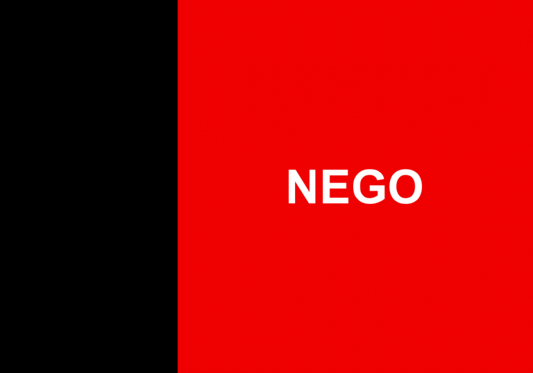

Davi Victor
Sobre Mim
Sou natural da cidade de João Pessoa, na Paraíba. Trabalho atualmente como técnico de açougue. Amo passar tempo com minha família, estar com amigos da igreja e jogar futebol. Um dos meus hobbies é preparar bolos, salgados e outras comidas. Minha família gosta muito quando estou cozinhando, e isso me traz bastante alegria!
João Pessoa, Paraíba

A Paraíba é um estado cheio de história, cultura e belezas naturais. Em João Pessoa fica a Ponta do Seixas, conhecida como o ponto mais oriental das Américas, onde o sol nasce primeiro no continente. O estado também é famoso pelo São João de Campina Grande, considerado uma das maiores festas juninas do mundo.